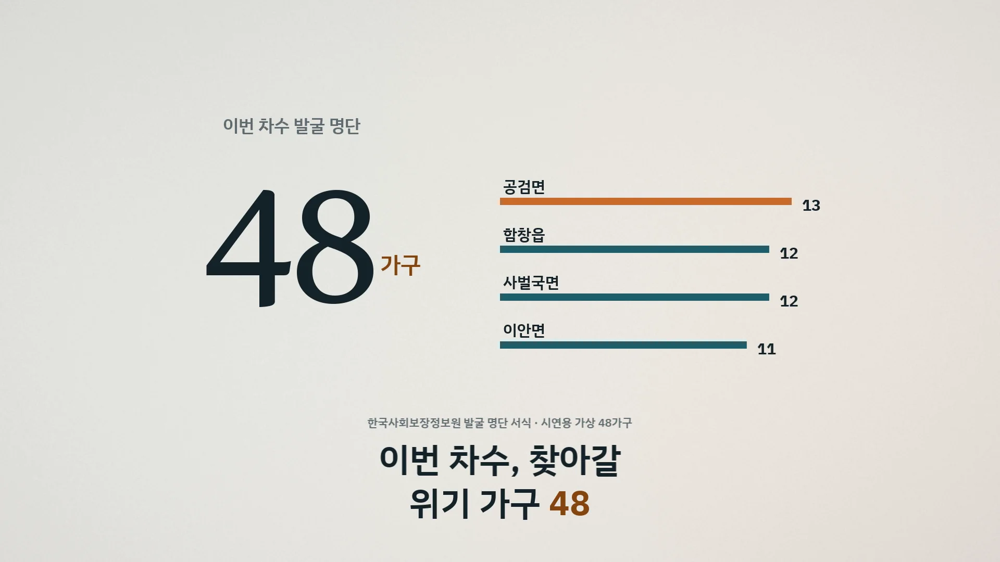
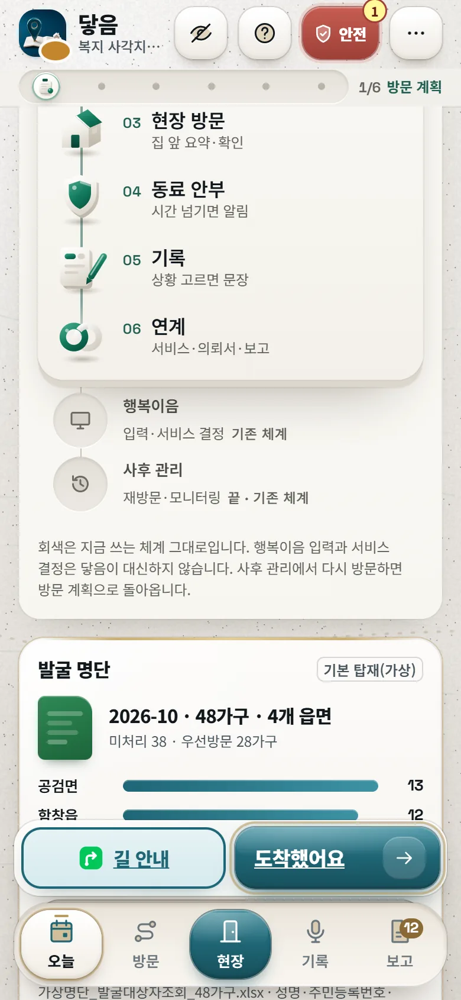
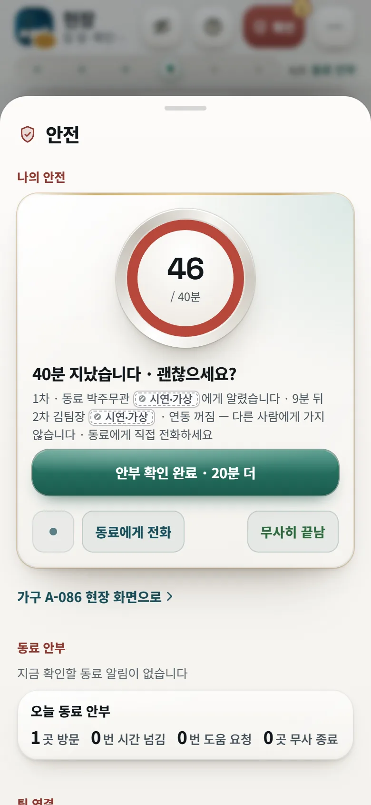
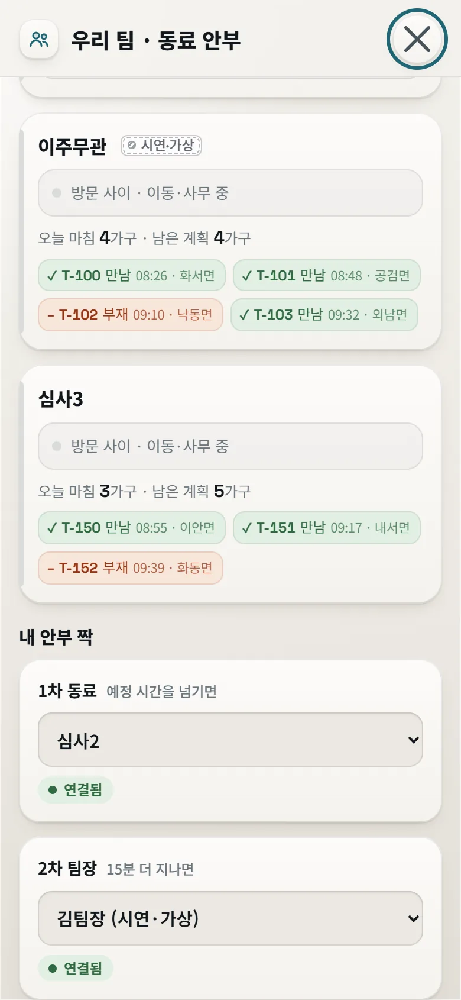
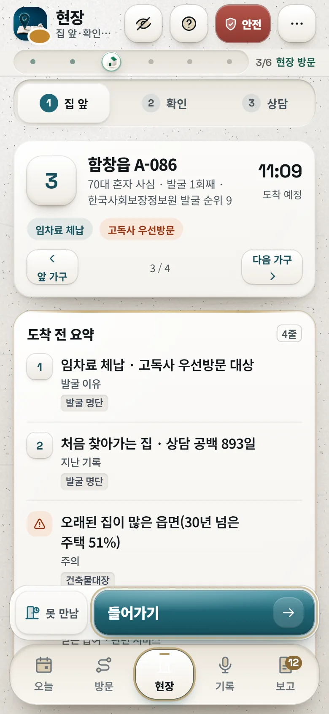
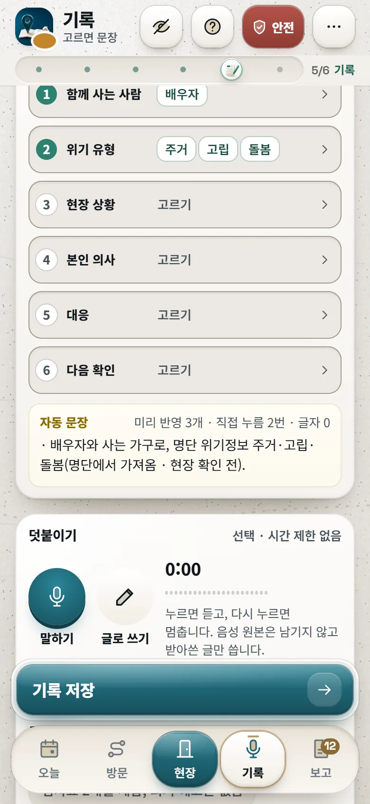
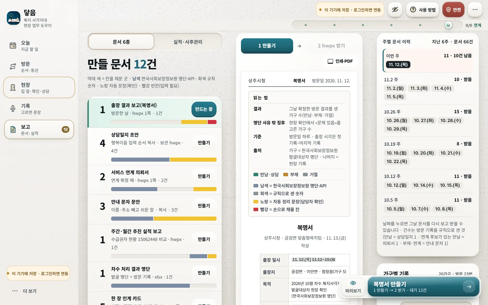
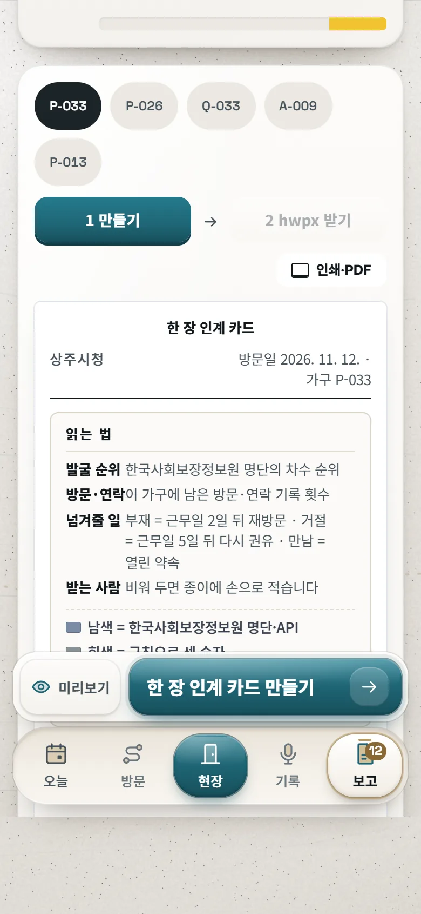
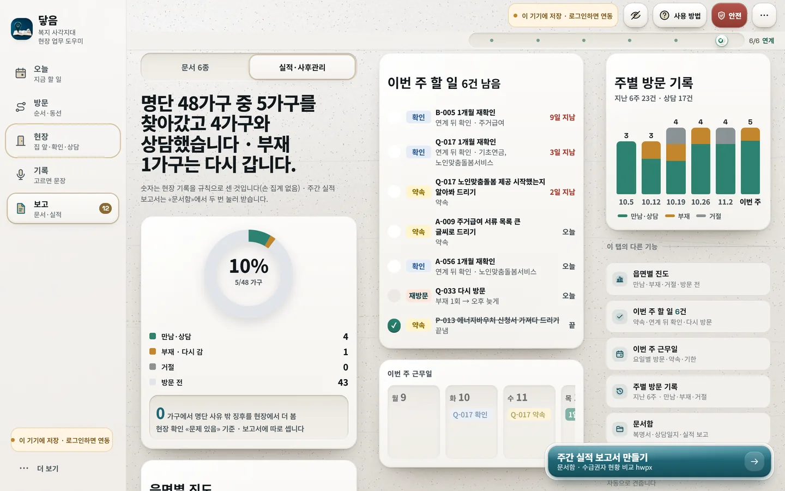
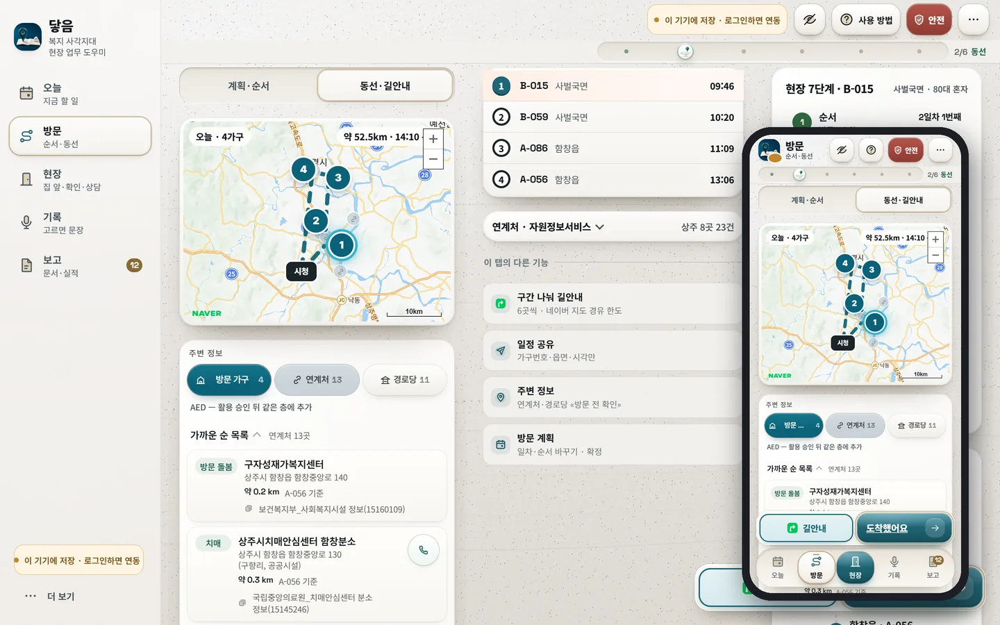

담당 공무원 1인당 연 조사 건수(2018→2021)
세계일보 2022-11-249업무 배경 · 복지 사각지대 발굴
도움이 필요한데 드러나지 않은 가구를 먼저 찾아가는 일
위기정보로 만든 발굴 명단이 시군구를 거쳐 읍면동 담당자에게 옵니다. 그다음은 담당자의 몫입니다.
- 1한국사회보장정보원 발굴위기정보 50종으로 선별, 격월 연 5~6회 통보1
- 2시군구 → 읍면동 명단 전달행복이음으로 명단을 받음10
- 3현장 담당 공무원의 한 차수명단 접수부터 사후관리까지 7단계
한 차수의 길
명단 한 번에 일곱 단계, 그리고 다시 다음 차수현장 담당자 업무 단계닿음이 맡는 구간(2~7단계)현장 담당자 6명이 이 순서를 «실제와 맞다»고 확인4
현장 담당자의 어려움
늘어난 명단, 혼자 도는 현장, 다시 쓰는 보고
찾아갔지만 만나지 못한 방문 비율. 다시 찾아가는 횟수는 «3번»이 가장 많았습니다(4/6)
현장 설문4방문 순서를 행복이음 화면을 보고 정함. 모바일 일정·지도는 «안 쓴다» 4명
현장 설문(응답 5명 시점)4«같은 내용을 반복해서 적는 것»을 덜고 싶다는 응답도 있었습니다
현장 설문(응답 5명 시점)4현장 담당자 6명에게 직접 물었습니다
상주시 읍면동 · 2026-10-30 · 닿음의 기능 순서는 이 답을 따랐습니다4
문항별 응답
막대 길이 = 응답 6명 중 비율. 허탕 막대는 응답 범위(10~50%, «절반 넘게» 1명).업무 순서 확인
6명 모두 «맞다» → 닿음의 업무 주기 그대로 씀
가장 손이 많이 가는 단계
- 현장 조사2명
- 현황 보고1명
- 연락·재방문1명
그래서 만든 앱닿음이 맡는 현장의 하루

닿음복지 사각지대 현장 업무 도우미
도움이 필요한 이웃에게 담당자의 손이 닿고, 필요한 지원이 제때 닿도록.
명단을 받은 다음의 현장 업무를 돕는 공무원용 웹 도구입니다. 한 차수의 2단계부터 7단계까지, 손으로 하던 구간을 맡습니다.
기록 입력과 처리 확정은 행복이음에서 합니다. 닿음은 그 앞뒤의 현장 공백을 채웁니다.
사회보장 데이터 × AI
읽고, 가공하고, 현장에 건넵니다
명단과 공공데이터를 그때그때 읽어 정리하고, AI와 도로 경로로 가공해, 담당자가 바로 움직일 수 있는 화면으로 보냅니다.
1읽는 정보
- 발굴 명단한국사회보장정보원 · 시연은 가상 48가구
- 복지서비스 목록한국사회보장정보원 · 중앙·지자체 369건
- 연계처 735곳한국사회보장정보원 자원정보 외
- 수급권자 현황한국사회보장정보원
- 기상특보기상청
- 도로 경로네이버 지도 · 누를 때마다
2닿음이 가공하는 방식
- 기기 안명단은 이 기기 안에서만 읽어 정리파일을 서버로 보내지 않고, 위기 신호 순서로 줄 세움
- 가림이름·연락처·주소를 가린 뒤에만 AI로화면에서 한 번, 서버에서 한 번 더
- AI상담 기록 요약 · 연계 서비스 추천복지서비스 목록 안에서만 고르고, 목록 밖 답은 버림 · 담당자가 확인한 뒤 기록에 넣음
- 실시간도로 기준으로 방문 순서·시간 다시 계산네이버 도로 경로, 누를 때마다 새로
- 실시간PC ⇄ 폰 바로 반영같은 계정이면 바뀌는 즉시
AI 요약·추천은 담당자가 누를 때만 쓰고, 연결이 안 되면 기기 안 자동 문장으로 대신합니다.
| 데이터 | 쓰는 화면 | 하는 일 |
|---|---|---|
| 복지사각지대 발굴대상자 조회 서식·발굴 명단한국사회보장정보원 · 행복이음 내려받기 | 방문 계획 · 집 앞 요약 · 현장 확인 | 발굴 순위·근무일 기한으로 순서, 발굴 사유·받는 급여 요약 |
| 중앙부처·지자체 복지서비스 OpenAPI한국사회보장정보원 · 15090532·15108347 | 상담 도움 · 연계 | 복지서비스 369건 원문 요약, 연계 후보 |
| 자원정보서비스 현황 OpenAPI + 공공 연계처 10종한국사회보장정보원 15001839 외 | 동선 · 지도 주변 정보 | 연계처 735곳을 가까운 순으로 |
| 복지사업 시군구별 수급권자 현황한국사회보장정보원 · 15062448 | 주간·월간 실적 보고 | 상주시 2025-12 기준 비교 |
| 기상청 초단기실황·예보·특보기상청 · 15084084 | 오늘 날씨 한 줄 | 방문 읍면동 기준 기온·하늘·특보 |
| 건축물대장(보조)국토교통부 · 15134735 | 집 앞 요약 | 읍면별 30년 넘은 주택 비율로 «주의할 점» |
21종공공데이터포털 데이터369건복지서비스735곳연계 후보
아침 · 사무실 PC
네이버 지도로 짜는 가장 짧은 방문 동선
오늘 찾아갈 가구의 발굴 순위와 처리 기한을 지키면서 이동 순서를 다시 짭니다. 정한 순서는 경유지 그대로 네이버 지도 길안내로 이어집니다.
이전엔명단 순서대로 손으로 짜던 동선→닿음으로는시연 4가구 이동 거리 31% 감소
- 순서 자동 계산 · 가장 가까운 가구부터 잇고, 엇갈리는 구간을 풀어 다시 다듬습니다
- 기한 우선 · 발굴 순위와 근무일 기준 처리 기한이 먼저, 거리는 그다음
- 도로 기준 시각표 · 네이버 지도 도로 경로로 구간마다 실제 거리·시간을 받아 출발·상담 30분·점심 시간까지 넣은 하루 일정표를 짭니다
- 주변 연계처 · 지도 위에 가까운 연계 기관을 함께 띄웁니다
- 길안내 한 번 · «네이버 지도로 길안내»를 누르면 지도 앱이 방문 순서 그대로 경유지를 받습니다
명단 순서대로 갈 때닿음이 다시 짠 순서그림은 개념도 · 가상 가구 · 거리는 추정

동선 짜기(PC) → 폰 «오늘» 탭 길 안내 · 가상 데이터
PC에서 짜고 폰으로 출발
책상에서 확정하면 주머니 속 폰이 압니다
같은 계정이면 PC에서 확정한 방문 계획이 폰 «오늘» 탭에 바로 뜹니다. 차에서는 «길 안내», 집 앞에서는 «도착했어요».
도착했어요
다음에 누를 단추에는 모래빛 금색 빛줄기가 천천히 지나갑니다
사무실 PC순서 짜기
오늘 갈 가구를 고르면 기한·거리로 순서와 시각표가 나옵니다.
실시간 연동폰에 바로
확정한 계획이 같은 계정 폰의 «오늘» 탭에 그대로 뜹니다.
현장 폰네이버 지도 길안내
방문 순서가 경유지로 넘어가 지도 앱 길안내가 시작됩니다.
출발 뒤 · 현장 폰
혼자 방문하는 담당자 곁에 동료가 있습니다
처음 가는 집, 연락이 닿지 않던 가구를 혼자 찾아갈 때가 많습니다. 집에 들어가기 전에 안전 모드를 켜 두면, 정한 시간이 지나도 소식이 없을 때 동료와 팀장 화면에 차례로 알림이 갑니다.
이전엔방문 중 안부는 각자 동료에게 직접 알려야 함→닿음으로는예정 시간을 넘기면 동료·팀장 화면에 알림이 먼저 감
- 0분들어가기 · 예정 시간 고르기
집 앞 화면의 «들어가기»를 누르고 머물 시간을 정합니다.
- 방문 중«괜찮아요»로 시간 늘리기
상담이 길어지면 한 번 눌러 예정 시간을 늘립니다.
- 예정 넘김1차 동료 화면에 알림
«방문이 정한 시간을 넘었어요». 동료가 전화로 안부를 확인하고 누르면 현장 폰에도 반영됩니다.
- +15분2차 팀장 화면에도 알림
그래도 확인이 없으면 팀장에게까지 올라갑니다.
- 끝무사히 끝남 · 하루 요약
방문을 마치면 알림이 꺼지고, 그날 받은 안전 모드 기록이 하루 요약으로 모입니다.
빨간 «안전» 단추 하나로 모든 안전 기능
- 내 안전 알리기
- 동료 안부
- 팀 연결
조용한 도움 요청
소리도 큰 알림도 없이 한 번에 보냅니다. 보낸 폰 화면에는 티가 나지 않고, 1차 동료와 2차 팀장 화면에 «바로 전화하거나 함께 가 주세요»가 뜹니다.
팀 코드로 이어지는 짝
- 팀 만들기 · 팀 이름을 넣으면 팀 코드를 받습니다
- 코드로 들어오기 · 같은 팀 동료가 코드를 넣고 합류합니다
- 짝 지정 · 1차 동료와 2차 팀장을 고르고, 상대가 «수락»하면 연결됩니다


안전 모드 방문 중 · 팀 코드와 1차 동료·2차 팀장 · 가상 팀원
위치(GPS)는 보내지도 보여 주지도 않음가구는 관리 번호·읍면까지만알림은 앱 화면에만, 문자·카톡 없음표시 이름은 직함으로도 가능두 사람 방문이 필요한 집은 집 앞 화면에 «동료와 같이 가기»
집 앞 · 현장 폰
집 앞에서 확인하고, 고르면 기록이 됩니다
초인종을 누르기 전에 이 집의 사정을 한 장으로 보고, 상담이 끝나면 상황을 고르는 것만으로 상담일지 문장이 완성됩니다.
이전엔현장 메모를 사무실에서 다시 입력→닿음으로는고른 상황이 상담일지 문장으로 바로
상황 고르기 · 직접 눌러 보세요
글자 입력 없이, 열 번 안팎의 누름으로
여섯 줄에서 상황을 고르면 정해진 규칙으로 짧은 개조식 문장이 이어 붙습니다. 앞에서 고른 현장 점검 징후와 명단의 위기정보는 미리 채워져 있습니다.
- 덧붙이기 · 맞는 칸이 없으면 말하기나 글로 쓰기로 더합니다. 위기 유형별 예시 문장 칩으로 시작할 수도 있습니다
- 맞는 서비스 · 한국사회보장정보원 복지서비스 목록에서 맞는 서비스를 함께 보여 줍니다
- AI 요약·연계 추천 · 누를 때만, 이름·연락처를 가린 뒤 보냅니다. 문장은 담당자가 확인합니다
- 늘 펼친 상담일지 · 상황 고르기와 보고서 미리보기가 접히지 않아, 고르는 대로 상담일지 한 장이 채워지는 것을 바로 봅니다
상담 기록 · 예시누름 0번
자동으로 써지는 상담일지 문장
들어가기 전, 집 앞 화면
현장에서 자주 막히는 순간마다 쓰는 도구
이 집의 사정을 먼저
발굴 사유, 받는 급여, 주의할 점을 한 장으로 봅니다. 도로명주소는 자동으로 정리하고, 맞지 않는 주소는 «확인 필요»로 표시합니다. 읍면별 오래된 주택 비율이 높으면 주의할 점에 함께 적습니다.
부재도 기록이 됩니다
간접 확인 내용을 고르고, 문 앞 방문 안내 쪽지와 안내 문자 문안을 만들고, 다음 방문 시간대를 제안받습니다.
- 전기 계량기 돌아감 — 거주 중으로 보임
- 이웃 «저녁 6시 뒤 귀가» 진술
- 오전 방문 두 번 모두 부재 — 저녁 시간대로 옮김
눈으로 본 것을 칩으로
끼니, 난방, 고지서, 거동처럼 집 안팎에서 본 징후를 누르면 그대로 상담 기록의 «현장 상황»으로 넘어갑니다.


집 앞 화면 · 늘 펼친 상담일지 · 가상 데이터
돌아와서 · 사무실 PC
현장 기록이 결재용 A4 문서로
폰으로 남긴 기록과 발굴 명단을 모아 문서를 만듭니다. 복명서의 출장 시각은 그날 첫 기록부터 마지막 기록까지로 채워집니다.
이전엔현황 보고·복명서를 매번 새로 씀→닿음으로는«만들기 → 받기» 두 번에 A4 한글·엑셀
만들기→받기한글·엑셀, A4 쪽 나눔 그대로
복명서(출장 결과 보고)상담일지 초안서비스 연계 의뢰서안내 문자 문안주간·월간 추진 실적 보고차수 처리 결과 명단(엑셀)한 장 인계 카드큰 글씨 안내문
한국사회보장정보원 명단·공공데이터규칙으로 센 숫자자동 정리 문장(확인)직접 넣을 빈칸
- 칸마다 출처 색 · 빨강 빈칸이 0이어야 «받기»가 열립니다
- 주간 실적 · 주별로 방문한 날과 복명서·상담일지·연계 의뢰서·안내 문자 건수를 셉니다
- 지난 문서 · 주별 이력에서 다시 받기

문서함 · 복명서·상담일지·연계 의뢰서·주간 실적 대기 · 가상 데이터
실제 결과물
앱이 만든 문서를 그대로 옮겼습니다
시연 데이터로 만든 A4 문서입니다. 누르면 크게 봅니다.
1 / 6
담당이 바뀔 때 · 보고 탭
담당자가 바뀌어도 가구의 경과가 끊기지 않습니다
가구마다 쌓인 방문·확인·연계 기록을 한 장 인계 카드로 정리합니다. 다음 할 일까지 적혀 있어 새 담당자가 첫날부터 이어 갑니다.
이전엔가구별 경과를 기록을 뒤져 다시 정리→닿음으로는방문·확인·연계·다음 할 일이 한 장으로
- 한 장 인계 카드 · 발굴 유형과 횟수, 지난 방문(만남·부재 횟수), 현장 확인, 연계, 주의할 점, 다음 할 일. 한글(hwpx) 1쪽으로도 받습니다
- 다음 할 일 제안 · 부재만 이어졌으면 «다른 시간대에 다시 방문», 만났으면 «연계 회신 확인·신청 여부 전화»를 먼저 적어 둡니다
- 가구별 기록·문서 · 한 가구를 여러 번 방문해도 덮어쓰지 않고 차례로 쌓여, 찾아보고 고쳐 쓸 수 있습니다
- 개인정보 없이 · 카드에는 가구 번호·읍면·횟수만 담고, 이름·주소·연락처는 행복이음에서 확인하도록 비워 둡니다
한 장 인계 카드A-080 · 함창읍 · 예시
- 발굴생계·고립 위기 유형 · 발굴 2회째
- 지난 방문만남 1번 · 부재 2번
- 확인한 것현장 체크 6건(문제 2)
- 연계긴급복지 생계지원
- 주의2인 방문 권장
다음 할 일연계 회신 확인 · 신청 여부 전화
이름·주소·연락처는 넣지 않습니다 — 행복이음에서 확인

연계 뒤 · 실적·사후관리
연계로 끝내지 않고, 남은 가구까지 끝까지
서비스를 연계한 날부터 다시 확인할 날을 근무일에 맞춰 잡고, 이번 주에 챙길 약속·재확인·재방문을 한 목록으로 모읍니다.
이전엔연계 뒤 재확인 날짜를 따로 챙김→닿음으로는30·90·180일 재확인이 근무일에 맞춰 자동으로
- 연계한 날서비스 안내·의뢰
- 30일1차 재확인 · 끝냄
- 90일2차 재확인 · 오늘
- 180일3차 재확인 · 예정
주말이면 다음 근무일로 옮기고, 기한이 지나면 «기한 지남»으로 앞에 올립니다. «안 하기로 함»으로 정리된 연계는 빠집니다.
- 이번 주 할 일 · 약속, 연계 뒤 확인, 재방문을 기한 순으로 모읍니다. 늦은 것이 맨 위로 오고, 누르면 «끝냄»
- 부재 가구 재방문 · 부재 횟수와 이웃 진술로 다시 찾아갈 시간대를 제안합니다
- 이번 주 근무일 띠 · 방문일, 약속, 재확인, 명단 처리 기한이 요일별로 한눈에
- 읍면별 진도와 남은 가구 · 만남·부재·거절·예정으로 나눈 진도와, 읍면·담당별 남은 가구 막대
- 차수 마감 · 가구마다 마지막 방문 결과를 담은 차수 처리 결과 명단을 엑셀로
이번 주 할 일예시
- 확인A-080 2차 재확인 · 긴급복지 생계지원기한 지남
- 약속A-080 신청서 안내 후 전화 확인수
- 재방문A-112 다시 방문 · 부재 2회 → 저녁목
- 약속A-031 서류 회신 확인끝냄
읍면별 남은 가구 · 예시
함창읍9
화서면6
모동면4
공검면2

-
바람 14명①동선강점 절로 →
방문 순서(행복이음 화면·수첩·상의)
방문 순서 = 행복이음 화면·수첩·동료 상의 · 모바일 일정·지도 «안 쓴다» 4 -
바람 21건③상황 고르기강점 절로 →
«같은 내용 반복해 적기»
덜고 싶은 일 «같은 내용 반복적으로 적는 것»(자유응답 1건, 줄여 인용) -
바람 36/6④보고서 자동강점 절로 →
보고서 한글·엑셀 «쓸 것 같다» 6/6
보고서 한글·엑셀 «쓸 것 같다» 6/6 -
바람 44명⑥재방문·재확인 일정강점 절로 →
허탕 뒤 다시 찾아가기 «3번»
재시도 «3번» 4명
늘 곁에 · PC와 폰 같은 기능
하루를 받쳐 주는 작은 기능들
PC와 폰은 탭과 기능이 같고, 화면 폭에 따라 배열만 달라집니다.

같은 계정이면 실시간 연동
PC에서 확정한 방문 계획이 폰에 바로 뜨고, 폰 기록이 PC 문서에 바로 채워집니다. 코드나 QR로 넘길 필요가 없습니다.
명단 불러오기
행복이음에서 받은 명단(.xlsx·.xls·.csv)을 넣으면 이 기기 안에서만 읽어 가구 목록으로 정리합니다.
오늘 날씨·특보
방문할 읍면동 기준 기온·하늘·기상특보를 한 줄로. 출처 기상청.
화면 가림·자동 잠금
머리 단추로 바로 가리고, 3분 동안 자리를 비우면 모든 화면이 잠깁니다.
현장 추가 발굴 가구
명단에 없던 가구를 현장에서 찾으면 간단히 등록해 신규 상담 입력용 초안을 만듭니다.
큰 글씨 안내문
어르신 가구에 남길 안내문을 큰 글씨 한 장으로 뽑습니다.
설치 없는 웹
주소만 열면 바로 씁니다. 원하면 «더 보기»에서 홈 화면에 설치합니다.
다음 할 일 안내
상태가 바뀔 때 다음에 누를 곳을 잠깐 알려 주고, 평소엔 그 단추에 모래빛 금색 빛줄기만 은은하게 지나갑니다.
처음 안내 다섯 장
처음 열면 명단·동선·현장·기록·보고 순서로 짧게 보여 주고, «더 보기»에서 다시 봅니다.
새로운 앱
명단을 받은 그다음을 맡습니다
지금까지
발굴과 통보
- 한국사회보장정보원이 위기정보로 명단 선별
- 행복이음으로 읍면동에 배정
- 방문 순서·동선·안전·기록·보고·인계·사후관리는 담당자 몫
닿음
명단 이후 현장 업무
- 동선 → 안전 → 기록 → 보고 → 인계 → 사후관리가 한 흐름
- 사무실 PC와 현장 폰이 같은 정보를 실시간으로
- 설치 없는 웹, A4로 바로 나오는 한글·엑셀 문서
품질 · 개인정보 · 보안
실측으로 점검하고, 고쳐 나갔습니다
지금 바로 써도 무리가 없도록, 전자정부 웹 품질·접근성 지침에 맞춰 시연판을 직접 재고 찾은 것을 고쳤습니다.
미흡 0전자정부 웹 품질 7개 영역 · 접근성(KWCAG 2.2) 33개 항목
오류 03개 브라우저 엔진 × PC·폰 폭
0.77초첫 화면이 뜨는 시간(LCP)
7/7로그인 없이 서버 자료를 읽으려는 시도 거부
- 발굴 명단은 이 기기 안에서만 읽고 서버로 보내지 않습니다
- AI에 보낼 때는 이름·연락처·주민등록번호·주소를 가립니다
- 전 구간 HTTPS, 공개 키만 노출
닿음 전자정부 웹 품질 적합성 자체 점검(2026-11, 시연판 실측)8